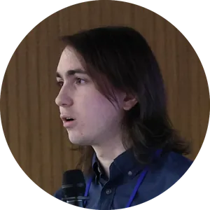

STRIDES
Saint Mary's Team of Researchers Investigating the Dynamics and Evolution of Star clusters
STRIDES evokes the dynamic nature of our research, steady scientific progress, and taking steps towards larger goals. It is fitting for a team that brings together young researchers eager to learn. Our group cultivates values of inclusivity, equity, empathy, and scientific curiosity.
Group lead
Vincent Hénault-Brunet
As group leader, I am proud to work with a small but dynamic team of talented and self-motivated early-career researchers. I strive to provide personalised mentorship and guidance so that each student can reach their full potential, while fostering a collaborative research environment.
Current STRIDES group members
Kristen Cowan (BSc Honours student 2026-2027; Dean of Science Access to Research Award 2026)
Kristen joined the group in 2026 and is working on star-by-star dynamical models of globular clusters with a bottom-light stellar initial mass function.
Mackenzie Hayduk (Undergraduate researcher; NSERC USRA 2026)
Mackenzie joined the group in 2025 and has worked on orbit modelling of fast-moving stars around an IMBH in Omega Centauri, as well as on the early growth of IMBHs through runaway stellar collisions and hierarchical mergers.

Nolan Dickson (PhD 2026; recently successfully defended his thesis! Nolan will soon start a postdoctoral position at MPA-Garching.)
Nolan joined the team in 2020, and first completed his MSc in 2022 before moving on to the PhD. His work has focused on fast dynamical modelling of globular clusters to uncover their black hole populations and initial conditions.
If you are interested in becoming part of STRIDES, see how you can join the team. We particularly welcome expressions of interest from well-prepared applicants who have non-traditional backgrounds or career paths.